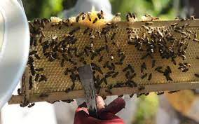
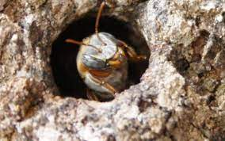

|

|
¿Como se puede usar un gestor de contenido web para fomentar el consumo de miel local?
Abeja chiapaneca

- Usar un gestor de contenido web puede llegar a benificar tanto como a los apicultores,tambien al publico que consume el producto.
- Puedes proporcionar información detallada sobre tu miel local en la página web, incluyendo su origen, proceso de producción, beneficios para la salud y más.
Esto puede ayudar a educar a tus clientes y a crear una conexión más fuerte con el producto.
- En resumen, una página web puede ser una herramienta poderosa para promover la miel local de Chiapas y aumentar su consumo tanto a nivel local como internacional. Ofrece una plataforma versátil para llegar a nuevos clientes, educar sobre tu producto y facilitar las ventas en línea, todo mientras construyes una presencia sólida en el mercado.
|
¿Quienes se benefician?
- Consumidores: Los clientes que visitan el sitio web y compran miel y productos relacionados son los beneficiariosdirectos. Obtienen acceso conveniente a miel de calidad y productos apícolas.
- Apicultores y Productores de Miel: El sitio web trabajara con apicultores locales o productores de miel, ya que tienenla oportunidad de comercializar y vender sus productos en línea, llegando a un público más amplio y aumentando susingresos.
- Pequeñas Empresas y Emprendedores: Al incluir productos relacionados con la miel, como cosméticos, alimentosgourmet o productos de cuidado personal, las pequeñas empresas y emprendedores que fabrican estos productospueden beneficiarse directamente al vender sus artículos a través de la plataforma.
- Comunidades Rurales: En áreas donde la apicultura es una fuente importante de ingresos, la promoción y venta demiel en línea puede beneficiar directamente a las comunidades rurales al proporcionar un canal adicional de ingresos yapoyar el desarrollo económico local.
- Educadores y Divulgadores: Incliyendo un poco sobre contenido educativo sobre la miel, las abejas y la apicultura,los educadores y divulgadores relacionados con estos temas pueden beneficiarse directamente al tener una plataformapara compartir su conocimiento.
|
Administracion y mantenimiento
El uso de un sistema de gestión de contenidos (CMS) facilita la tarea de actualización y mantenimiento de contenidos. Simplemente implica encontrar la plantilla o tipo de contenido que desea modificar o crear, editar el contenido correspondiente y guardar los cambios, similar a usar un procesador de textos.
Por el contrario, sin utilizar un CMS, dependiendo de la complejidad de los cambios, es posible que necesites contratar a un profesional para que modifique directamente el código HTML, CSS o JavaScript de la página.
Además, el sistema de gestión proporciona una variedad de herramientas para organizar fácilmente páginas web y buscar contenido del sitio web. Esto se logra a través de una interfaz intuitiva y sencilla, sin necesidad de localizar archivos físicos en el disco duro ni comprender la estructura de almacenamiento real.
Las mismas consideraciones se aplican a otros recursos utilizados, como imágenes, documentos o vídeos.: Los clientes que visitan el sitio web y compran miel y productos relacionados son los beneficiariosdirectos. Obtienen acceso conveniente a miel de calidad y productos apícolas.
¿Y como lo aplicamos en este proyecto?:Para dar servicio y mantenimiento a nuestra pagina tenemos que tener un equipo al pendiente , y tambien un equipo que se encargue de analizar el mercado y constantemente actualiza la pagina con nueva información.
|
Liceciatura en Sistemas computacionales
© Copyright 2023. Charly Aquino Vazquez 5°J
|